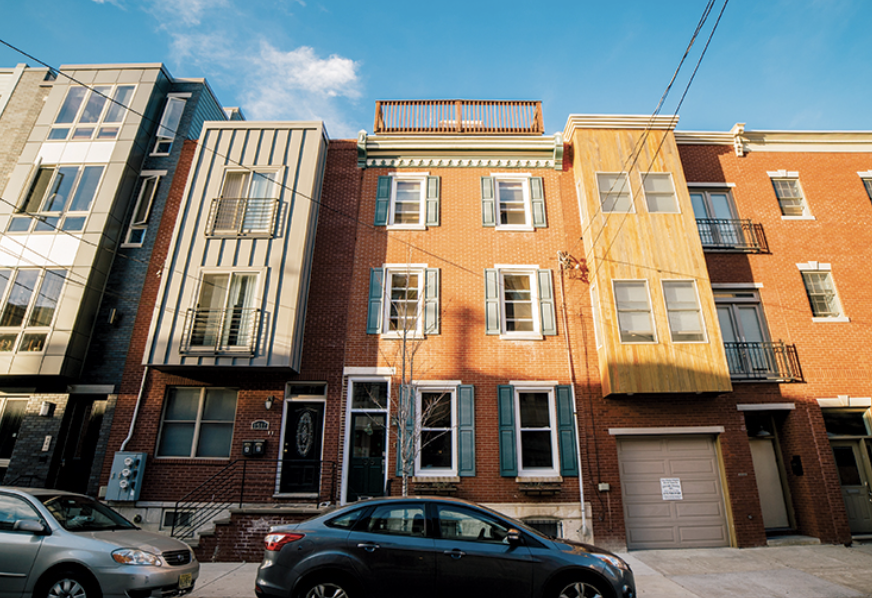

Roommate Issues
Living with a group of roommates in a house comes with just as many ups as it does downs. While it is great having a built in community and getting to know people - it is difficult adjusting to everyone’s different living styles. From issues in the bathroom, kitchen, or guests that are over - there is always something that someone has a problem with.
Recently there was an issue between two of my roommates where one was being too loud late at night (think 2 am) and the other was trying to sleep. When confronted the loud roommate did not see an issue. I am curious if Claude can help resolve the situation or give the tired roommate some tips on how to handle the situation. Below is the conversation with Claude:
Prompt:
“Roommate Conflict Resolution Prompt
I’m dealing with a challenging roommate situation and need advice on how to handle it effectively.
I live in a shared house with multiple roommates, and we’re experiencing a specific conflict: One roommate is regularly being loud at around 2 AM, while another roommate needs to sleep during those hours. When the sleep-deprived roommate confronted the loud roommate about the issue, the loud roommate dismissed it and didn’t acknowledge any problem with their behavior.
Please provide:
- An objective analysis of both roommates’ perspectives in this situation
- Practical communication strategies for the sleep-deprived roommate to address this issue more effectively
- Reasonable compromise solutions that respect everyone’s needs
- Suggestions for house-wide policies or agreements that could prevent similar conflicts
- Tips for managing emotions during conflict conversations
- When/how to involve other roommates or the landlord if the situation doesn’t improve
I’d appreciate both immediate tactics for addressing the current situation and longer-term strategies for fostering better communication in our shared living space. The goal is finding a solution that allows everyone to feel comfortable and respected in their home.”
Claude:
I understand you’re dealing with a challenging roommate conflict involving late-night noise and sleep disruption. Let me help you work through this situation with some practical advice.
Understanding Both Perspectives
From the sleep-deprived roommate’s perspective: - Sleep is a fundamental need and chronic disruption can seriously impact health, work performance, and emotional wellbeing - The home should be a place where basic needs like rest can be met consistently - Their concern appears reasonable and they’ve already attempted direct communication
From the loud roommate’s perspective: - They may value their freedom to use their living space as they wish - They might not fully understand the impact of their noise on others - The 2 AM timing suggests they might be a night owl or have schedule constraints - Their dismissive response could indicate they don’t see the issue as serious or feel defensive
Effective Communication Strategies
For the sleep-deprived roommate: 1. Use “I” statements to express impact: “When there’s loud noise at 2 AM, I can’t sleep, which affects my work performance and health” rather than “You’re being inconsiderate”
Choose the right time: Approach the conversation when both parties are calm, not immediately after an incident when emotions are high
Be specific about the problem: Instead of generalizing (“you’re always loud”), focus on specific behaviors (“the music volume after midnight”)
Express empathy: “I understand you might want to enjoy your evening, and I’m hoping we can find a way for both of us to get what we need”
Ask questions to understand: “I’m curious about what you’re doing at that time and if there are ways we could work around both our needs”
Reasonable Compromise Solutions
Designated quiet hours: Establish house-wide quiet hours (perhaps 11 PM-7 AM) when noise should be kept to a minimum
Sound management: The loud roommate could use headphones for music/TV, place rugs under furniture, or move louder activities to common areas further from bedrooms
Schedule adjustments: If the loud roommate needs to be active at 2 AM (perhaps for work/time zone reasons), maybe they could use a different part of the house
Physical solutions: The sleep-deprived roommate might try earplugs, white noise machines, or sound insulation for their room
Room rearrangement: If possible, consider swapping rooms to put more distance between the roommates
House-Wide Policies
Create a roommate agreement: Document agreed-upon quiet hours, guest policies, and conflict resolution processes
Regular house meetings: Hold brief, scheduled meetings to discuss concerns before they become major issues
Feedback system: Establish a non-confrontational way to raise concerns (perhaps a shared message board or group chat)
Respect reminder: Post a simple reminder about quiet hours in common areas
Trial periods: Implement solutions with agreed-upon evaluation periods (e.g., “Let’s try this for two weeks then discuss”)
Managing Emotions During Conflict
Pause when needed: If emotions escalate, suggest a break: “I notice we’re getting frustrated. Should we take 10 minutes and revisit this?”
Focus on the issue, not character: Address the behavior rather than making it personal
Validate feelings: “I understand this is your home too and you want freedom to enjoy it”
Stay solution-oriented: Keep returning to “How can we solve this together?” rather than assigning blame
Use reflective listening: “So what I’m hearing is…” to ensure understanding before responding
When to Escalate
Involve other roommates: If direct communication fails after 2-3 attempts, consider a house meeting where others can share perspectives
Mediation: Ask a neutral third party (perhaps another roommate) to help facilitate a discussion
Landlord involvement: Contact the landlord only after exhausting other options, focusing on lease violations regarding “quiet enjoyment” of the property
Documentation: Keep a simple log of incidents if the situation persists, noting dates, times, and follow-up attempts
The key is approaching this as a shared problem to solve rather than a confrontation. Most roommate conflicts improve significantly when both parties feel heard and respected in the process of finding solutions.
Conclusion
This exchange shows that LLMs have promise in resolving group conflict. AI provides a neutral third-party perspective that’s free from emotional entanglement. In roommate conflicts, people get emotional, making it difficult for involved parties to see both sides clearly. Claude’s response offered a clear take of what was going on. Claude provided a goodframework that makes addressing the conflict less overwhelming - something that I think a lot of groups struggle with. I also thought that it was interesting that it offered multiple solution options without being invested in any particular outcome. It will be interesting to see where LLM’s get applied in industry - but I think that it will quickly become the default for breaking down a large problem into smaller pieces.